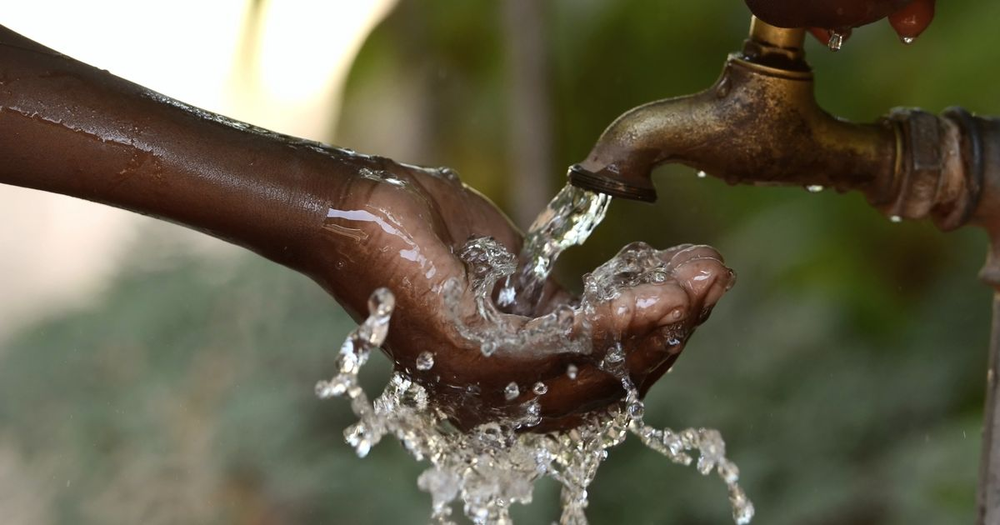
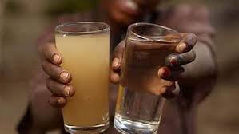
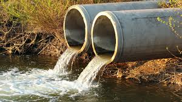
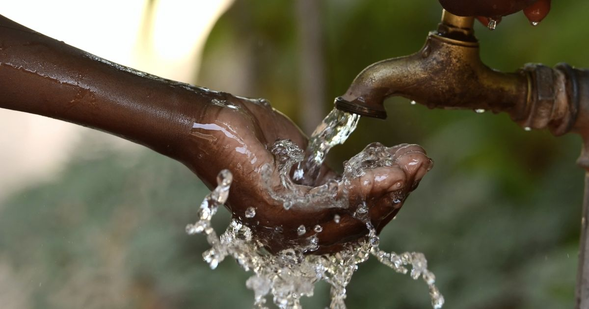
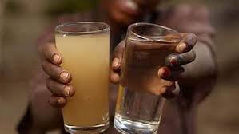
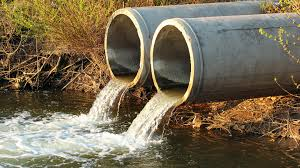

Importance of Clean Water and Sanitation
Access to clean water and proper sanitation is essential for health, dignity, and prosperity. It is a fundamental human right recognized by the United Nations. Water and sanitation are critical for the prevention of diseases, improved health outcomes, and the overall well-being of communities.
Current Global Situation
Water Access:
Despite significant progress, approximately 2.2 billion people globally lack safely managed
drinking water services. This means they either do not have access to water or the water available is not safe for consumption.
Sanitation:
Around 4.2 billion people lack safely managed sanitation services, including 673 million people who still
practice open defecation.
Hygiene:
Basic handwashing facilities with soap and water are available to only 60% of the global population.
Case Studies and Examples
India's Swachh Bharat Abhiyan (Clean India Mission):
This national campaign aims to eliminate open defecation and
improve solid waste management in urban and rural areas. It has significantly increased access to toilets and improved sanitation practices across the country.
Cape Town Water Crisis (2017-2018):
Cape Town, South Africa, faced a severe water crisis due to prolonged drought and mismanagement,
highlighting the importance of sustainable water management practices. The city implemented stringent water-saving measures and public awareness campaigns to avert "Day Zero" (when the city would run out of water).
Solutions and Innovations
Technology:
Advancements in water purification, desalination, and wastewater treatment technologies offer solutions to water scarcity and pollution.
Innovations such as portable water filters, solar desalination units, and decentralized wastewater treatment systems can improve access to clean water.
Policy and Governance:
Effective policies and governance frameworks are essential for managing water resources sustainably. This includes
regulations to prevent pollution, incentives for water conservation, and integrated water resource management approaches.
Community Involvement:
Empowering communities to participate in water and sanitation projects ensures that solutions are tailored to local needs and are sustainable.
Community-led total sanitation (CLTS) is an approach that has been successful in many regions.
Financial Investments:
Increased investments in water and sanitation infrastructure are critical. Public-private partnerships, international aid,
and innovative financing mechanisms can help bridge the funding gap.